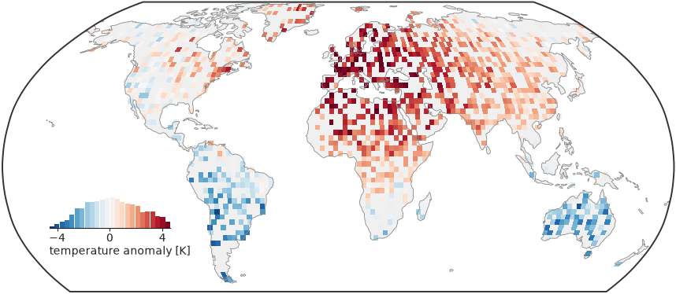
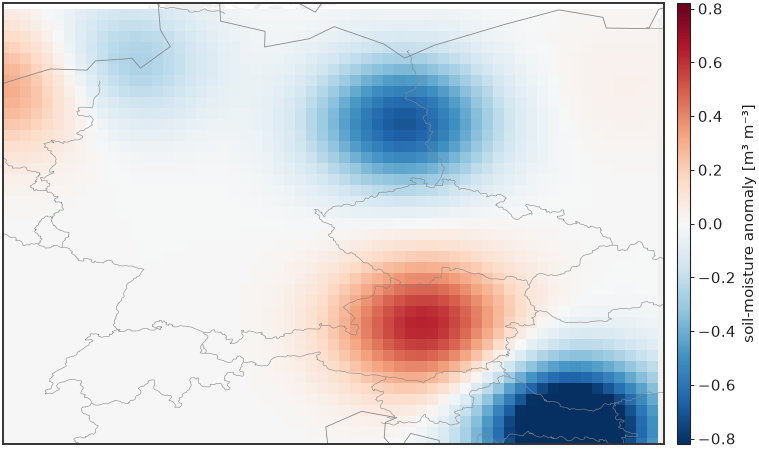
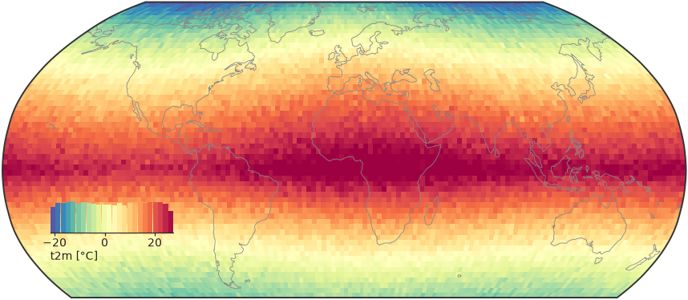
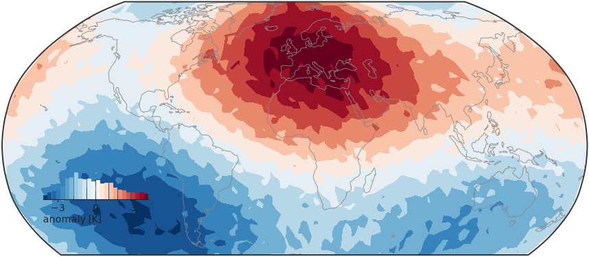
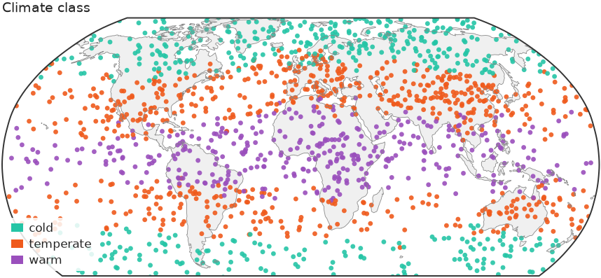
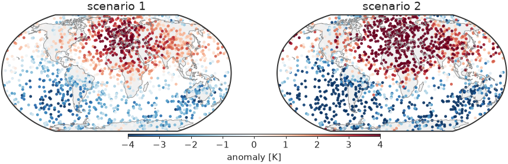
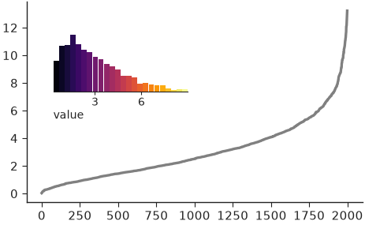
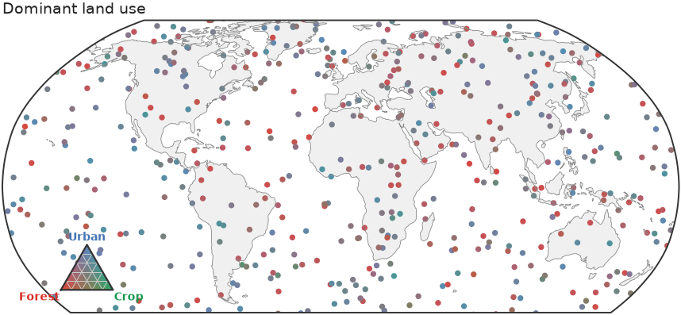

Maps¶
map() draws values at longitude/latitude on a
Robinson-projected world map with Antarctica cropped, a light land backdrop,
coastlines and an inset histogram that doubles as the colorbar. It returns
(fig, ax, mappable). With cartopy installed (pip install "nicefigs[maps]")
the map is projected; without it, every map helper falls back to a plain
equirectangular axes. The examples set the house style with
nf.set_theme("paper"); see Styling & themes.
Mapping scattered points¶
Pass 1-D lon, lat and values; below 5000 points map scatters them:
import nicefigs as nf
from nicefigs import data
nf.set_theme("paper")
lon, lat, temp = data.global_points(field="temperature")
fig, ax, mappable = nf.map(
lon, lat, temp,
cmap="RdYlBu_r",
colorbar_label="air temperature [°C]",
title="Mean annual air temperature",
)
print(type(mappable).__name__, len(temp))

Colour limits come from the 2nd and 98th percentiles (robust=True), so a few
extreme stations do not wash out the scale.
Bin-averaging dense data¶
kind picks "scatter", "binned" or "auto" (binned above 5000 points).
kind="binned" averages onto a bin_deg grid; diverging=True picks a
diverging colormap with limits symmetric about center (default 0), the right
choice for anomalies:
import nicefigs as nf
from nicefigs import data
nf.set_theme("paper")
lon, lat, anom = data.global_points(n=9000, field="anomaly")
fig, ax, mappable = nf.map(
lon, lat, anom,
kind="binned", diverging=True, bin_deg=2.5,
colorbar_label="temperature anomaly [K]",
)
vmin, vmax = mappable.get_clim()
print(f"{vmin:.2f} {vmax:.2f}")

The limits are symmetric, so zero sits on the colormap's neutral centre. A
global binned map drops bins whose centre is at sea; pass clip_ocean=False
for data measured over the ocean.
Choosing a projection and extent¶
projection is one of "robinson" (default), "platecarree",
"mollweide", "equalearth", "orthographic" or "nearside", resolved by
make_map_axes(); an unknown name raises
ValueError. extent=(west, east, south, north) zooms to a region and
replaces the default Antarctica crop
(ANTARCTICA_CUTOFF_EXTENT):
import nicefigs as nf
from nicefigs import data
nf.set_theme("paper")
lon, lat, field = data.regional_grid(res=0.25)
fig, ax, mappable = nf.map(
lon, lat, field,
extent=(5, 20, 45, 55),
projection="platecarree",
diverging=True, inset_hist=False, cbar=True, borders=True,
colorbar_label="soil-moisture anomaly [m³ m⁻³]",
)
print(field.shape)

A 2-D field is drawn as a raster; a regional map usually wants a slim
colorbar (cbar=True) rather than the inset histogram.
Mapping gridded and unstructured data¶
map dispatches on its input. A 2-D values array on a regular grid goes to
raster_map() (pcolormesh); a DataArray with
recognisable longitude/latitude coordinates is unpacked by
from_xarray() first:
import nicefigs as nf
from nicefigs import data
nf.set_theme("paper")
da = data.global_dataarray()
lon, lat, field = nf.from_xarray(da)
fig, ax, mappable = nf.map(da, cmap="Spectral_r", colorbar_label="t2m [°C]")
print(da.dims, field.shape)

For points on an unstructured or icosahedral mesh, kind="tri" triangulates
them in projected coordinates and draws them with
tri_map() (tricontourf, or "tripcolor"). Triangles
that would span the antimeridian or wrap over a pole are masked:
import nicefigs as nf
from nicefigs import data
nf.set_theme("paper")
lon, lat, values = data.icosahedral_field(n=3000)
fig, ax, mappable = nf.map(lon, lat, values, kind="tri", diverging=True,
colorbar_label="anomaly [K]")

Mapping class labels¶
categorical_map() draws a class label per point
— a land-cover code, a cluster id, a mask — in discrete colours with a patch
legend instead of a colorbar. Through map, pass kind="categorical" and the
ordered categories:
import numpy as np
import nicefigs as nf
from nicefigs import data
nf.set_theme("paper")
lon, lat, temp = data.global_points(field="temperature")
codes = np.digitize(temp, [5.0, 20.0]) # 0 cold, 1 temperate, 2 warm
fig, ax, mappable = nf.map(
lon, lat, codes, kind="categorical",
categories=["cold", "temperate", "warm"],
title="Climate class",
)
print([t.get_text() for t in ax.get_legend().get_texts()])

A sequence of names reads codes as 0..n-1; a {code: name} mapping takes
arbitrary codes. Colours default to qualitative()
and can be set with colors. Codes outside categories and non-finite
coordinates are dropped. Above 5000 points the cloud is gridded by majority
vote per cell, since the mean of class codes is meaningless; ties go to the
category listed first.
Note
Class codes carry their own discrete norm, so vmin, vmax, robust and
diverging are ignored for kind="categorical", and no colorbar or inset
histogram is drawn.
Composing map panels¶
The layer helpers — scatter_map(),
binned_map(), raster_map, tri_map and
categorical_map — draw onto a map axes you pass as ax and return
(ax, mappable); the cartopy CRS is detected from the axes. Build the axes
with make_map_axes(), add land and coastlines with
draw_background(), and share one colorbar across
panels with colorbar():
import nicefigs as nf
from nicefigs import data
nf.set_theme("paper")
fig = nf.figure(width="full", aspect=0.32)
lon, lat, anom = data.global_points(field="anomaly")
for i in range(2):
ax, ccrs = nf.make_map_axes(fig, (1, 2, i + 1))
nf.draw_background(ax, ccrs)
_, mappable = nf.scatter_map(lon, lat, anom * (i + 1), ax=ax, cmap="RdBu_r",
vmin=-4, vmax=4, size=3)
ax.set_title(f"scenario {i + 1}")
nf.colorbar(mappable, fig.axes, label="anomaly [K]", location="bottom", shrink=0.5)

Both panels share fixed limits, so one colorbar reads for both.
Docking the histogram colorbar¶
inset_histogram_colorbar() is the
histogram map docks in the empty South Pacific: a histogram of the mapped
values coloured by the same colormap, so it shows both the colour scale and
the data distribution. Call it on any axes; bounds places it in axes
fractions:
import numpy as np
import nicefigs as nf
nf.set_theme("paper")
values = np.random.default_rng(0).gamma(2.0, 1.5, 2000)
fig, ax = nf.subplots(width="half", aspect=0.6)
ax.plot(np.sort(values), color="0.5")
nf.inset_histogram_colorbar(ax, values, cmap="inferno", bounds=(0.08, 0.55, 0.4, 0.3),
label="value")

Ternary maps¶
For a three-part composition per point, such as land-use fractions,
ternary_map() colours each point by a barycentric
blend of three corner colours and adds a triangular legend:
import nicefigs as nf
from nicefigs import data
nf.set_theme("paper")
lon, lat, _ = data.global_points(n=600, land_bias=False)
comp, _ = data.ternary_points(n=600)
fig, ax = nf.ternary_map(lon, lat, comp, labels=("Forest", "Crop", "Urban"),
size=7, title="Dominant land use")
print(comp.shape, comp.sum(axis=1).min().round(6))

See Colormaps & palettes for the corner palettes shared by every ternary helper.